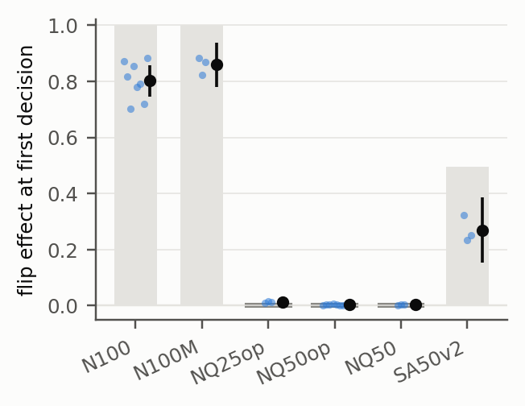

Know2Act: When Does an Agent's Written Prediction Control Its Next Action?
Manuscript (PDF)Code, protocol and read-outs
Question
Agents are often trained to write a prediction before they act, and people read those predictions to monitor or steer the agents. We ask when such a prediction actually controls the decision that follows, and what in the fine-tuning data decides that. We study it in a counterfactual ALFWorld where object locations follow conventions that the model can only learn from fine-tuning. At the first search step the agent's own note is the only location information in its context.
Short answer. It depends on whether the training data settle it. When the action always followed the prediction in training, the data never show whether the agent acts on the prediction or on what it has learned. The fine-tuned agent then acts on the prediction: replace it, and 80% of first steps follow the replacement, although deleting it changes almost nothing. When a quarter of the training predictions are contradicted by the action, the agent ignores replaced predictions, as its data imply, while it keeps writing them.

Findings
Results come from the held-out test split. The model is Qwen3-4B after supervised fine-tuning. Unless stated otherwise, numbers are for the first search step and for object classes whose convention can be learned.
With training data in which every prediction is followed, the written prediction steers the first decision without being needed. Deleting the prediction lowers the probability of the predicted move by 0.015; a perfect imitator of these data would not change its move either, because 30% of the training steps teach the action without a prediction. Replacing the prediction with the one the agent writes for another object redirects 80% of first steps across eight seeds. A randomly ordered ranking, a form never seen in training, is followed even more readily (0.90 against 0.80, higher in all eight seeds). In held-out rooms, classes whose location the weights cannot know are redirected just as often (0.81).
When a quarter or half of the training predictions are contradicted by the teacher's action, the agents do what their data imply: they ignore a replaced prediction, while they keep writing predictions. They follow a replaced prediction in 1.2% and 0.3% of first steps, within 0.012 of a perfect imitator of those data.
Unreliable actions leave part of the steering. When half of the search steps ignore correct predictions, 27% of first steps are still redirected. That lies between the two imitator references: 0 if the correct steps are credited to the weights, 50% if they are credited to the predictions.
Scope. One model (Qwen3-4B), supervised fine-tuning only, one-line template predictions, one synthetic environment.
Design in brief
| Arm | Change relative to N100 |
|---|---|
| N100 | every note states the convention and the next action follows it |
| NQ50op / NQ25op | half / a quarter of the notes are another class's convention; actions unchanged; the agent still learns to write notes |
| NQ50 | as NQ50op, but the foil note is unsupervised |
| SA50v2 | notes correct; half of all search steps follow the standard prior, independent of the note |
| N100M | no loss on actions taken without a note |
We edit, remove or blank the agent's own note at a decision point and measure the next action. Each arm is compared with what a perfect imitator of its training data would do. The primary contrast and its analysis were committed by hash to a private, timestamped repository before the test split was opened; the hashed texts are released with the code.
Reproduce
python scripts/alfcf_generate.py alfcf/rules_v1.json $ALFCF_DIR
python scripts/alfcf_teachers.py $ALFCF_DIR alfcf/rules_v1.json train $ALFCF_DIR/teachers/train_plus_draw0.jsonl --teachers plus --draw 0
python scripts/alfcf_build_v3.py $ALFCF_DIR/sft_v3 N100:0 NQ50op:0
python scripts/alfcf_tokenize.py $ALFCF_DIR/sft_v3/text_NQ50op_d0.jsonl data/sft/NQ50op_d0.jsonl Qwen/Qwen3-4B
torchrun --nproc_per_node 2 scripts/sft_train.py --data data/sft/NQ50op_d0.jsonl --model Qwen/Qwen3-4B --out runs/NQ50op_d0 --lam 0 --lr 1e-5 --epochs 1 --global_batch 64 --seed 0
python scripts/alfcf_pilot_eval_v3.py --model runs/NQ50op_d0/model --split test ...The full pipeline and the repository map are in the README.
Citation
@misc{lu2026know2act,
title = {Know2Act: When Does an Agent's Written Prediction Control Its Next Action?},
author = {Lu, Yiwen},
year = {2026},
note = {Manuscript},
url = {https://github.com/EvenEureka/Know2Act}
}